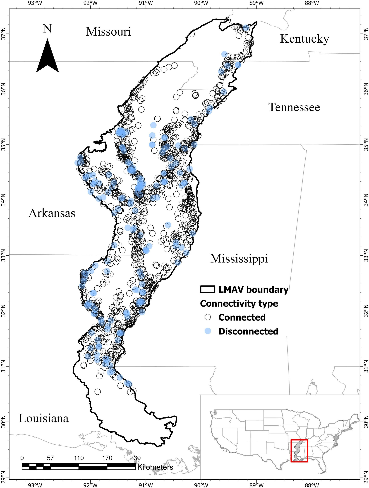
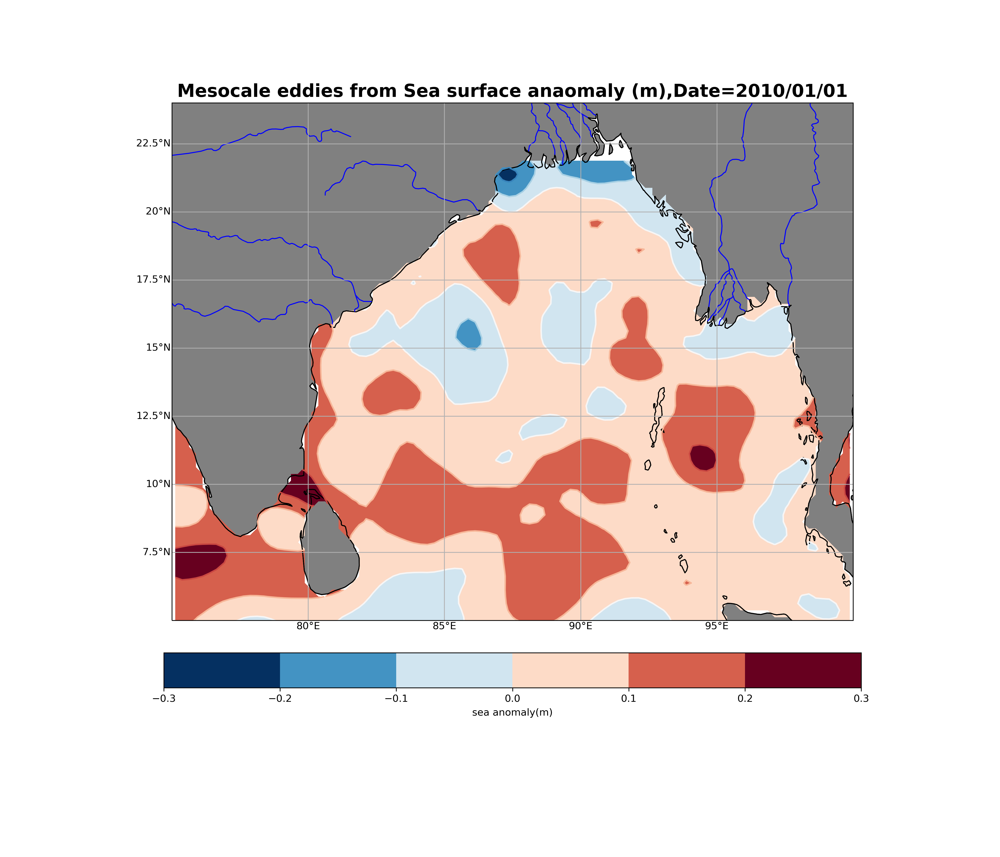
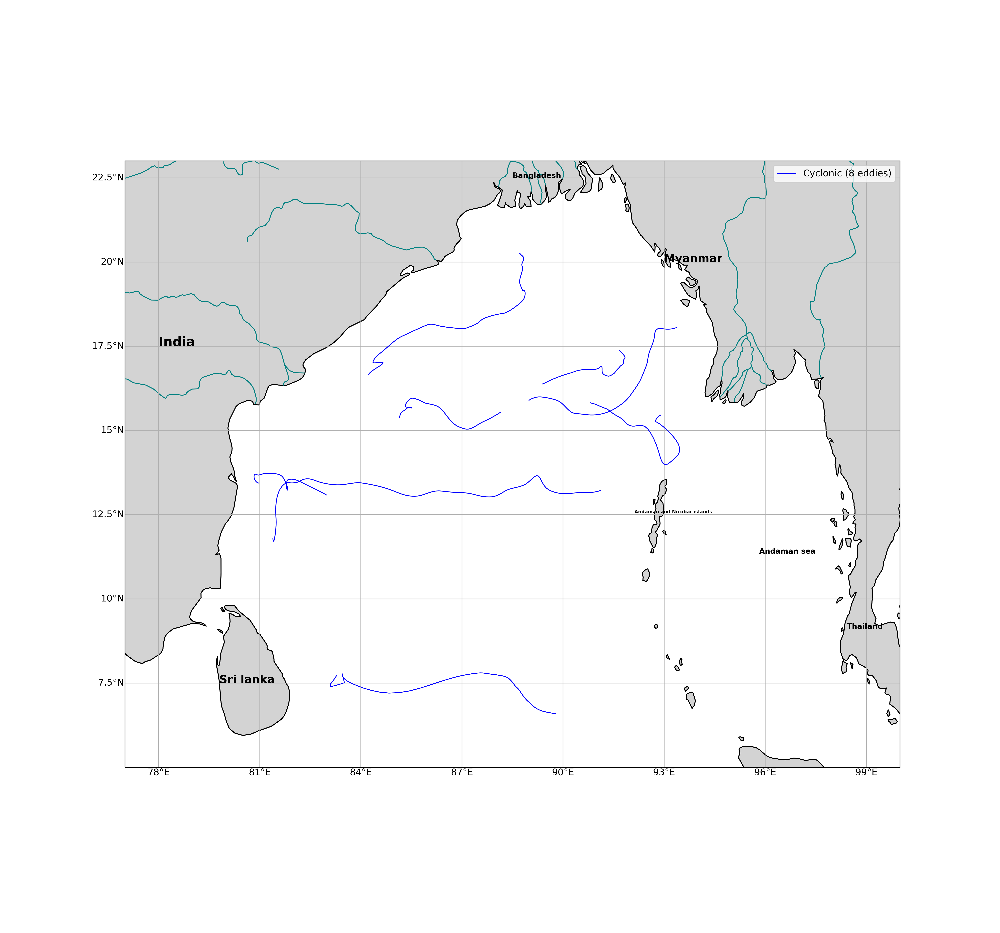

Scientific Programming for Ocean Science
High-performance languages and toolkits for numerical ocean modeling, data analysis, and visualization workflows.
Python
Primary language for oceanographic data processing, model pre/post-processing, and publication-quality visualization of ocean fields and time series.
Julia
High-performance ocean modeling and biogeochemical simulations. Julia's speed rivals Fortran/C while maintaining Python-like syntax, ideal for large-scale eddy-resolving simulations.
MATLAB / Octave
Classic ocean data analysis, ADCP/CTD processing, spectral analysis, and legacy oceanographic toolboxes that remain standard in the research community.
R for Oceanography
Statistical analysis, ecological modeling, and oceanographic visualization in R's rich scientific ecosystem, particularly for biogeochemical and fisheries-linked ocean studies.
Ocean & Coastal Hydrodynamic Models
Operational and research-grade ocean circulation models for coastal, regional, and global applications.
Regional Ocean Modeling System
Terrain-following sigma-coordinate model widely used for regional and coastal simulations. Supports baroclinic dynamics, nested domains, tidal forcing, and biogeochemical coupling. Applied for Gulf of Mexico circulation, tidal mixing, and sediment transport studies.
Finite Volume Community Ocean Model
Unstructured triangular-grid finite-volume model ideal for estuaries, tidal inlets, and complex coastal geometry. Handles wetting/drying of intertidal flats and incorporates atmosphere-wave-ocean coupling for realistic coastal simulations.
Advanced Circulation Model
High-resolution unstructured-grid model for storm surge, tidal circulation, and coastal flooding. The gold standard for hurricane impact assessment along the Gulf and Atlantic coasts, supporting FEMA flood maps and emergency preparedness planning.
Semi-implicit Cross-scale Hydroscience Integrated System
Next-generation hybrid V-grid model (unstructured horizontal + terrain-following/z-level vertical) supporting fully baroclinic dynamics, atmosphere-ocean-wave-sediment coupling, and seamless cross-scale simulations from rivers to ocean basins.
Global & Basin-Scale Ocean Models
Isopycnal-coordinate models used for global ocean reanalysis and forecasting. HYCOM (Hybrid Coordinate Ocean Model) and MOM6 provide open-boundary conditions for regional models and long-term climate simulations with high fidelity in deep-ocean layer representation.
Spectral Wave Models
Third-generation spectral wave models simulating wind-wave generation, propagation, and dissipation. WAVEWATCH III for oceanic scales; SWAN for nearshore wave transformation, shoaling, refraction, and diffraction in coastal zones.
Watershed & Riverine Models
Hydrological and hydraulic models for watershed runoff, riverine floodplain inundation, and land-ocean connectivity. Coupled with ADCIRC for compound flooding scenarios integrating riverine discharge, tidal forcing, and storm surge contributions.
Governing Equations of Ocean Dynamics
The mathematical foundation of numerical ocean modeling — primitive equations, thermodynamics, and transport.
Momentum Equations (Horizontal)
The horizontal momentum equations governing large-scale ocean circulation, incorporating the Coriolis force, pressure gradient force, and turbulent friction terms.
where \( f = 2\Omega\sin\phi \) is the Coriolis parameter, \( \rho_0 \) is a reference density, and \( \mathcal{F} \) represents turbulent friction/mixing terms.
Hydrostatic Equation
Fundamental vertical force balance in the ocean under the hydrostatic approximation, valid for large horizontal-to-vertical scale ratios typical in ocean basins and continental shelves.
This approximation eliminates solving the vertical momentum equation, dramatically reducing computation cost in large-scale ocean models.
Continuity Equation (Mass Conservation)
Mass conservation for an incompressible Boussinesq fluid, ensuring the divergence of the velocity field is zero throughout the ocean volume.
In Boussinesq models, density variations are only retained in the buoyancy term; the full mass conservation uses incompressibility.
Temperature & Salinity Conservation
Advection-diffusion equations for potential temperature and salinity, the two fundamental tracers determining seawater density and driving thermohaline circulation.
\( \kappa_T \) and \( \kappa_S \) are turbulent diffusivities; \( Q_T \) and \( Q_S \) represent surface heat flux and freshwater forcing respectively.
Seawater Equation of State (TEOS-10)
The nonlinear thermodynamic relationship between seawater density, temperature, salinity, and pressure — the closure equation for all ocean models.
\( \alpha \) = thermal expansion coefficient, \( \beta \) = haline contraction coefficient. The Gibbs SeaWater (gsw) Python library implements full TEOS-10.
Advection-Diffusion Equation
General transport equation for any scalar tracer (dissolved oxygen, nutrients, sediment, dye) capturing both advective transport by currents and turbulent mixing.
\( K \) is the turbulent eddy diffusivity; \( S_C \) is a source/sink term. This equation governs water quality and biogeochemical modeling in coastal systems.
Laplace & Poisson Equations
Used for the pressure solver in incompressible flow, stream-function computation, and as the classic teaching example in finite-difference methods for numerical oceanography.
Solved numerically via Gauss-Seidel iteration or direct matrix methods. The 2-D heat equation solver is a foundational code exercise in computational ocean science.
Navier-Stokes Equations (Full)
The complete momentum balance for a viscous fluid. Ocean models derive from the Reynolds-averaged Navier-Stokes (RANS) equations with turbulence closure schemes (k-ε, Mellor-Yamada, KPP).
In ocean modeling, the Coriolis force \( -2\boldsymbol{\Omega}\times\mathbf{u} \) is added to the right-hand side to account for Earth's rotation.
Numerical Methods & Grid Architectures
Discretization schemes, time-stepping methods, and vertical coordinate systems used in operational ocean models.
Finite Difference
Structured grids, simple implementation. Arakawa C-grid staggering for pressure-velocity. Used in ROMS, MOM6, POM.
Finite Element
Unstructured triangular/quad meshes. High flexibility for complex coastal geometry. Used in ADCIRC, SELFE.
Finite Volume
Conservative flux-based formulation. Unstructured grid capability. Used in FVCOM and SCHISM.
Sigma Coordinates
Terrain-following vertical coordinate system. Ideal for shallow coastal flows. Smooth bottom boundary layer.
Z-Level Coordinates
Fixed horizontal layers. Simple for deep ocean. Staircase bottom approximation. Used in MOM and NEMO.
Isopycnal Coordinates
Density-following layers. No diapycnal diffusion. Ideal for basin-scale deep-ocean models (HYCOM, MOM6).
| Method | Grid Type | Time Scheme | Key Advantage | Example Model |
|---|---|---|---|---|
| Finite Difference (FD) | Structured | Leapfrog / AB3 | Simple, computationally fast | ROMS, MOM6, POM |
| Finite Element (FE) | Unstructured | Runge-Kutta / Implicit | Handles complex geometry | ADCIRC, SELFE |
| Finite Volume (FV) | Unstructured | Semi-implicit | Flux conservation guaranteed | FVCOM, SCHISM |
| Spectral (SE) | Structured | Leapfrog | High spectral accuracy | WaveWatch III |
Oceanographic Data Products & Forcing
Observational datasets and reanalysis products used for model initialization, open boundary conditions, and skill validation.
HYCOM Reanalysis / GOFS 3.1
Global Ocean Forecast System at 1/12° resolution providing reanalysis and forecast fields of SSH, temperature, salinity, and currents. Standard open-boundary forcing for regional ROMS and FVCOM configurations.
CMEMS — Copernicus Marine
Comprehensive European ocean data service providing satellite-derived and ensemble reanalysis products: sea level anomaly, SST, chlorophyll, and multi-model ocean forecasts for scientific and operational use.
Argo Float Profiles
Global array of autonomous profiling floats measuring T/S from the surface down to 2000 m depth. Essential for deep-ocean model validation, mixed layer depth climatologies, and thermohaline structure analysis.
NOAA CoastWatch / ERDDAP
Satellite-derived coastal ocean products including AVHRR/MODIS SST, ocean color, and wind stress fields. ERDDAP enables standardized programmatic data access for satellite-model matchup studies and validation.
World Ocean Database (WOD)
NCEI's global in-situ oceanographic database spanning 1770–present with CTD, XBT, Argo, and mooring data. Used for climatological T/S fields (WOA23), model initialization, and long-term Gulf of Mexico trend analysis.
NOAA Tide Gauges & ADCP
Real-time and historical tidal elevation records from NOAA CO-OPS network, combined with ADCP current profiles for tidal harmonic analysis, model skill assessment (RMSE, bias, correlation), and storm surge hindcast validation.
Research Projects
Applied numerical oceanography projects combining model simulations, data analysis, and coastal management applications.
Mississippi Sound Hydrodynamics & Water Quality
Coupled hydrodynamic–water quality modeling of the Mississippi Sound using FVCOM and CE-QUAL-ICM. Investigating freshwater discharge influence on harmful algal bloom dynamics, seasonal hypoxia, and salinity stratification variability. NSF-funded doctoral research at Mississippi State University.

Floodplain Connectivity — Lower Mississippi Alluvial Valley
HEC-RAS and SWAT-coupled floodplain inundation modeling to quantify hydrological connectivity in the Lower Mississippi Alluvial Valley. Assessed habitat restoration scenarios for bottomland hardwood ecosystems and migration corridors for fish and waterfowl.

ROMS Simulation: Mesoscale Eddies & Loop Current
Regional ROMS simulation of Gulf of Mexico seasonal circulation, focusing on Loop Current dynamics, mesoscale eddy formation, and sea surface temperature anomalies. Validated against satellite altimetry (CMEMS) and HYCOM reanalysis products.

Sea Surface Temperature Trend Analysis
Long-term SST trend analysis for the Bay of Bengal using AVHRR, MODIS, and in-situ CTD observations. Identified warming signatures (>10°C seasonal anomalies) linked to altered monsoon-driven circulation and implications for tropical cyclone intensification.

Python Computational Oceanography Tutorials
Open-source educational materials for computational oceanography: 2-D Laplace heat equation solver (Gauss-Seidel), advection schemes stability analysis, tidal harmonic analysis with t_tide, HYCOM API data access workflows, and xarray-based ocean climatology processing. Published on GitHub and Medium.
Selected Publications & Reports
Peer-reviewed journal articles and technical reports in numerical and coastal oceanography.
Coupled Hydrodynamic–Water Quality Modeling of Mississippi Sound
Manuscript describing FVCOM-based simulation of coastal circulation and dissolved oxygen dynamics in the Mississippi Sound under varying freshwater discharge and wind forcing regimes. Target journal: Estuarine, Coastal and Shelf Science.
Hydrological Connectivity in the Lower Mississippi Alluvial Valley
Floodplain inundation frequency and habitat connectivity analysis using HEC-RAS coupled with multi-temporal remote sensing, informing conservation planning for migratory fish corridors and waterbird breeding habitat in the LMAV.
Explore the Code
Ocean model scripts, Python notebooks for data analysis, equation solvers, and HYCOM data-access tools are available on GitHub.
View GitHub Repository